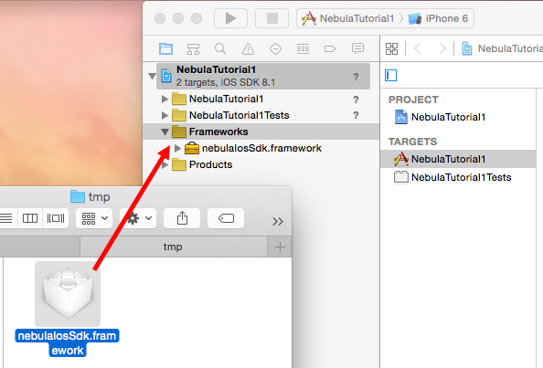

2. SDKセットアップ手順¶
ここでは、iOS SDK をアプリケーションに組み込む方法について説明します。
2.1. 事前準備¶
iOS の開発環境が必要になります。 OS X 10.12 以上を搭載した Mac に Xcode 8 以上をインストールしておく必要があります。
開発環境の詳細は Start Developing iOS Apps Today をご覧ください。
2.2. SDK 配布物の内容¶
- nebulaIosSdk.5.x.x.zip : SDK本体(Framework)
2.3. SDKの追加手順¶
上記 zip ファイルを展開してください。 nebulaIosSdk.framework フォルダが生成されます。
SDK を追加するプロジェクトを Xcode を開き、上記 nebulaIosSdk.framework フォルダを Xcode プロジェクトにドラッグして追加してください。 (事前に Frameworks グループを作成しておくことを推奨します)
この際、以下のように ‘Copy items if needed’ に必ずチェックを入れてください。 (チェックを入れないと、ファイルがコピーされません)

Xcode の Targets →アプリ名 →Build Phases タブを開き、 “Link Binary With Libraries” を展開します。
nebulaIosSdk.framework が追加されていることを確認してください。 追加されていない場合は、下部にある ‘+’ ボタンを押して追加してください。